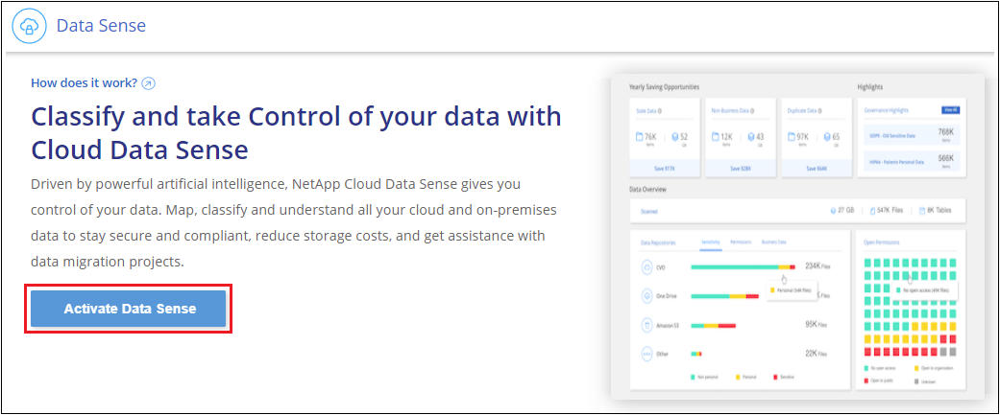
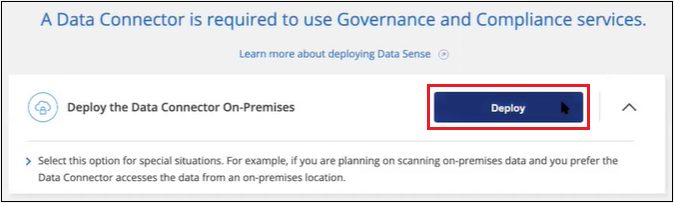

Deploy Cloud Data Sense on prem without internet access
Contributors
Complete a few steps to deploy Cloud Data Sense on a host in an on-premises site that doesn’t have internet access. This type of installation is perfect for your secure sites.
Note that you can also deploy Data Sense in an on-premises site that has internet access.
Supported data sources
When installed in this manner (sometimes called an "offline" or "dark" site), Data Sense can only scan data from data sources that are also local to the on-premises site. At this time, Data Sense can scan the following local data sources:
-
On-premises ONTAP systems
-
Database schemas
-
Non-NetApp NFS or CIFS file shares
-
Object Storage that uses the Simple Storage Service (S3) protocol
There is no support currently for scanning Cloud Volumes ONTAP, Azure NetApp Files, FSx for ONTAP, OneDrive accounts, SharePoint accounts, or AWS S3 accounts.
Limitations
Most Data Sense features work when it is deployed in a site with no internet access. However, certain features that require internet access are not supported, for example:
-
Managing Microsoft Azure Information Protection (AIP) labels
-
Automated software upgrades from Cloud Manager
Both the Cloud Manager Connector and Data Sense will require periodic manual upgrades to enable new features. You can see the Data Sense version at the bottom of the Data Sense UI pages. Check the Cloud Manager What’s New to see the new features in each release and for when a software update package is available. Then you can follow the steps to upgrade your Data Sense software.
Quick start
Get started quickly by following these steps, or scroll down to the remaining sections for full details.
 Install the Cloud Manager Connector
Install the Cloud Manager ConnectorIf you don’t already have a Connector installed at your offline on-premises site, deploy the Connector on a Linux host now.
 Review Data Sense prerequisites
Review Data Sense prerequisitesEnsure that your Linux system meets the host requirements, that it has all required software installed, and that your offline environment meets the required permissions and connectivity.
 Deploy Data Sense
Deploy Data SenseDownload the Cloud Data Sense software from the NetApp Support Site and copy the installer file to the Linux host you plan to use. Then launch the installation wizard and follow the prompts to deploy the Cloud Data Sense instance.
 Subscribe to the Cloud Data Sense service
Subscribe to the Cloud Data Sense serviceThe first 1 TB of data that Cloud Data Sense scans in Cloud Manager is free. A BYOL license from NetApp is required to continue scanning data after that point.
Install the Cloud Manager Connector
If you don’t already have a Cloud Manager Connector installed at your offline on-premises site, deploy the Connector on a Linux host in your offline site.
Prepare the Linux host system
Data Sense software must run on a host that meets specific operating system requirements, RAM requirements, software requirements, and so on.
-
Operating system: Red Hat Enterprise Linux or CentOS version 8.0 or 8.1
-
Version 7.8 can be used, but the Linux kernel version must be 4.14 or greater
-
The OS must be capable of installing the Docker Engine (for example, disable the firewalld service if needed)
-
-
Disk: SSD with 500 GiB available on /, or
-
100 GiB available on /opt
-
400 GiB available on /var
-
-
RAM: 64 GB (swap memory must be disabled on the host)
-
CPU: 16 cores
Note that you can deploy Data Sense on a system with fewer CPUs and less RAM, but there are limitations when using these systems. See Using a smaller instance type for details.
The following software must be installed on the host before you install Data Sense:
-
Docker Engine version 19 or later. View installation instructions.
-
Python 3 version 3.6 or later. View installation instructions.
Verify Cloud Manager and Data Sense prerequisites
Review the following prerequisites to make sure that you have a supported configuration before you deploy Cloud Data Sense.
-
Ensure that Cloud Manager has permissions to deploy resources and create security groups for the Cloud Data Sense instance.
-
Ensure that the Cloud Manager Connector can access the Data Sense instance. The security group for the Connector must allow inbound and outbound traffic over port 443 to and from the Data Sense instance.
This connection enables deployment of the Data Sense instance and enables you to view compliance and governance information.
Make sure port 8080 is open so you can see the installation progress in Cloud Manager.
-
Ensure that you can keep Cloud Data Sense running. The Cloud Data Sense instance needs to stay on to continuously scan your data.
-
Ensure web browser connectivity to Cloud Data Sense. After Cloud Data Sense is enabled, ensure that users access the Cloud Manager interface from a host that has a connection to the Data Sense instance.
The Data Sense instance uses a private IP address to ensure that the indexed data isn’t accessible to others. As a result, the web browser that you use to access Cloud Manager must have a connection to that private IP address. That connection can come from a host that’s inside the same network as the Data Sense instance.
Deploy Data Sense
For typical configurations you’ll install the software on a single host system. See those steps here.
For very large configurations where you’ll be scanning petabytes of data, you can include multiple hosts to provide additional processing power. See those steps here.
Single-host installation for typical configurations
Follow these steps when installing Data Sense software on a single on-premises host in an offline environment.
-
Verify that your Linux system meets the host requirements.
-
Verify that you have installed the two prerequisite software packages (Docker Engine and Python 3).
-
Make sure you have root privileges on the Linux system.
-
Verify that your offline environment meets the required permissions and connectivity.
-
On an internet-configured system, download the Cloud Data Sense software from the NetApp Support Site. The file you should select is named DataSense-offline-bundle-<version>.tar.gz.
-
Copy the installer bundle to the Linux host you plan to use in the dark site.
-
Unzip the installer bundle on the host machine, for example:
tar -xzf DataSense-offline-bundle-v1.7.2.tar.gzThis extracts required software and the actual installation file cc_onprem_installer_<version>.tar.gz.
-
Launch Cloud Manager and click the Data Sense tab.
-
Click Activate Data Sense.

-
Click Deploy to start the on-prem deployment wizard.

-
In the Deploy Data Sense On Premises dialog, copy the provided command and paste it in a text file so you can use it later, and click Close. For example:
sudo ./install.sh -a 12345 -c 27AG75 -t 2198qq --darksite -
Unzip the installation file on the host machine, for example:
tar -xzf cc_onprem_installer_1.7.2.tar.gz -
When prompted by the installer, you can enter the required values in a series of prompts, or you can enter the complete command in the first prompt:
Enter parameters as prompted: Enter the full command: -
Paste the information you copied from step 7:
sudo ./install.sh -a <account_id> -c <agent_id> -t <token> --darksite -
Enter the IP address or host name of the Data Sense host machine so it can be accessed by the Connector instance.
-
Enter the IP address or host name of the Cloud Manager Connector host machine so it can be accessed by the Data Sense instance.
-
Enter proxy details as prompted. If your Cloud Manager already uses a proxy, there is no need to enter this information again here since Data Sense will automatically use the proxy used by Cloud Manager.
Alternatively, you can create the whole command in advance and enter it in the first prompt:
sudo ./install.sh -a <account_id> -c <agent_id> -t <token> --host <ds_host> --cm-host <cm_host> --proxy-host <proxy_host> --proxy-port <proxy_port> --proxy-scheme <proxy_scheme> --proxy-user <proxy_user> --proxy-password <proxy_password> --darksiteVariable values:
-
account_id = NetApp Account ID
-
agent_id = Connector ID
-
token = jwt user token
-
ds_host = IP address or host name of the Data Sense Linux system.
-
cm_host = IP address or host name of the Cloud Manager Connector system.
-
proxy_host = IP or host name of the proxy server if the host is behind a proxy server.
-
proxy_port = Port to connect to the proxy server (default 80).
-
proxy_scheme = Connection scheme: https or http (default http).
-
proxy_user = Authenticated user to connect to the proxy server, if basic authentication is required.
-
proxy_password = Password for the user name that you specified.
-
The Data Sense installer installs packages, registers the installation, and installs Data Sense. Installation can take 10 to 20 minutes.
If there is connectivity over port 8080 between the host machine and the Connector instance, you will see the installation progress in the Data Sense tab in Cloud Manager.
From the Configuration page you can select the local on-prem ONTAP clusters and databases that you want to scan.
Multi-host installation for large configurations
For very large configurations where you’ll be scanning petabytes of data, you can include multiple hosts to provide additional processing power. When using multiple host systems, the primary system is called the Manager node and the additional systems that provide extra processing power are called Scanner nodes.
Follow these steps when installing Data Sense software on multiple on-premises hosts in an offline environment.
-
Verify that all your Linux systems for the Manager and Scanner nodes meet the host requirements.
-
Verify that you have installed the two prerequisite software packages (Docker Engine and Python 3).
-
Make sure you have root privileges on the Linux systems.
-
Verify that your offline environment meets the required permissions and connectivity.
-
You must have the IP addresses of the scanner node hosts that you plan to use.
-
The following ports and protocols must be enabled on all hosts:
Port Protocols Description 2377
TCP
Cluster management communications
7946
TCP, UDP
Inter-node communication
4789
UDP
Overlay network traffic
50
ESP
Encrypted IPsec overlay network (ESP) traffic
111
TCP, UDP
NFS Server for sharing files between the hosts (needed from each scanner node to manager node)
2049
TCP, UDP
NFS Server for sharing files between the hosts (needed from each scanner node to manager node)
-
Follow steps 1 through 8 from the Single-host installation on the manager node.
-
As shown in step 9, when prompted by the installer, you can enter the required values in a series of prompts, or you can enter the complete command in the first prompt.
In addition to the variables available for a single-host installation, a new option -n <node_ip> is used to specify the IP addresses of the scanner nodes. Multiple node IPs are separated by a comma.
For example, this command adds 3 scanner nodes:
sudo ./install.sh -a <account_id> -c <agent_id> -t <token> --host <ds_host> --cm-host <cm_host> -n <node_ip1>,<node_ip2>,<node_ip3> --proxy-host <proxy_host> --proxy-port <proxy_port> --proxy-scheme <proxy_scheme> --proxy-user <proxy_user> --proxy-password <proxy_password> --darksite -
Before the manager node installation completes, a dialog displays the installation command needed for the scanner nodes. Copy the command and save it in a text file. For example:
sudo ./node_install.sh -m 10.11.12.13 -t ABCDEF-1-3u69m1-1s35212 -
On each scanner node host:
-
Copy the Data Sense installer file (cc_onprem_installer_<version>.tar.gz) to the host machine.
-
Unzip the installer file.
-
Paste and run the command that you copied in step 3.
When the installation finishes on all scanner nodes and they have been joined to the manager node, the manager node installation finishes as well.
-
The Cloud Data Sense installer finishes installing packages, and registers the installation. Installation can take 15 to 25 minutes.
From the Configuration page you can select the local on-prem ONTAP clusters and databases that you want to scan.
Upgrade Data Sense software
Since Data Sense software is updated with new features on a regular basis, you should get into a routine to check for new versions periodically to make sure you’re using the newest software and features. You’ll need to upgrade Data Sense software manually because there’s no internet connectivity to perform the upgrade automatically.
-
Data Sense software can be upgraded one major version at a time. For example, if you have version 1.7.x installed, you can upgrade only to 1.8.x. If you are a few major versions behind, you’ll need to upgrade the software multiple times.
-
Verify that your on-prem Connector software has been upgraded to the newest available version. See the Connector upgrade steps.
-
On an internet-configured system, download the Cloud Data Sense software from the NetApp Support Site. The file you should select is named DataSense-offline-bundle-<version>.tar.gz.
-
Copy the software bundle to the Linux host where Data Sense is installed in the dark site.
-
Unzip the software bundle on the host machine, for example:
tar -xvf DataSense-offline-bundle-v1.8.2.tar.gzThis extracts the upgrade script start_darksite_upgrade.sh and any required third-party software.
-
Run the upgrade script on the host machine, for example:
start_darksite_upgrade.sh
The Data Sense software is upgraded on your host. The update can take 5 to 10 minutes.
Note that no upgrade is required on scanner nodes if you have deployed Data Sense on multiple hosts systems for scanning very large configurations.
You can verify that the software has been updated by checking the version at the bottom of the Data Sense UI pages.
 Request doc changes
Request doc changes Edit this page
Edit this page Learn how to contribute
Learn how to contribute